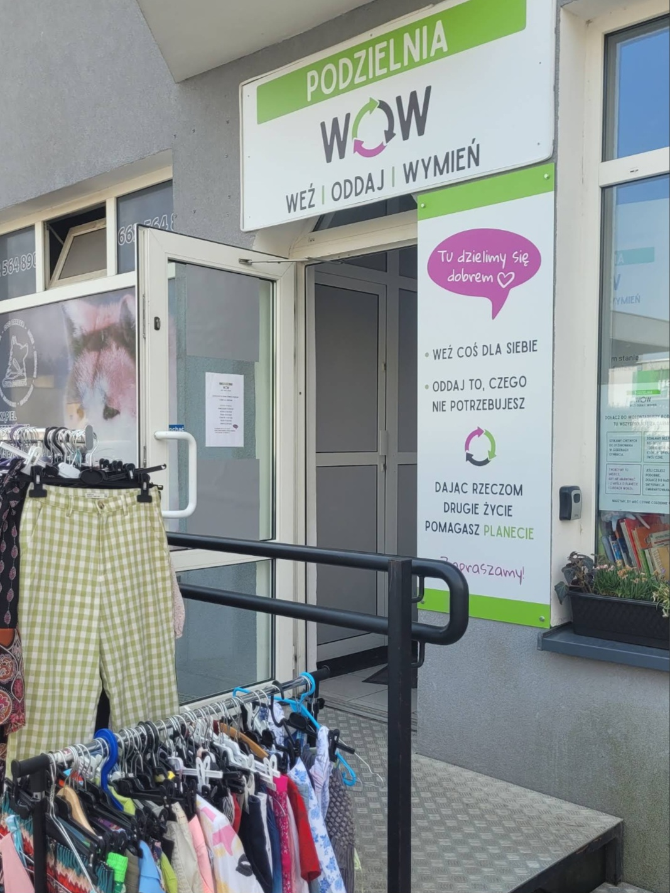
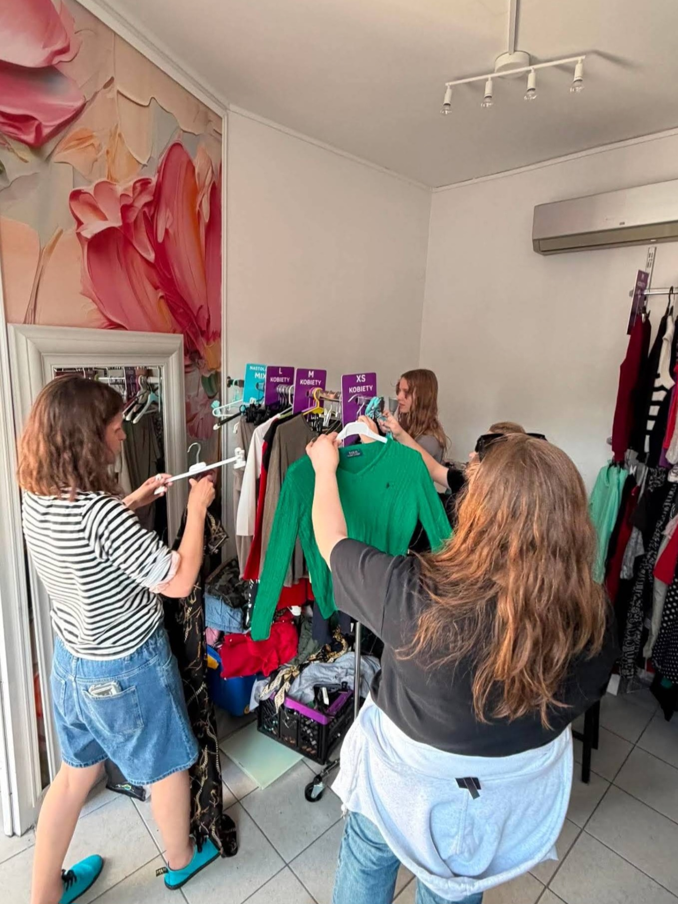

Cześć! Bardzo cieszymy się, że jesteś z nami i chcesz pomóc w działaniu Podzielni. Naszym głównym wspólnym zadaniem jest sprawne prowadzenie dyżurów. Poniżej znajdziesz komplet najważniejszych informacji i zasad, które krok po kroku wyjaśniają, jak wygląda praca na dyżurze.
Na naszym czacie grupowym. Formularz z grafikiem jest aktualizowany co miesiąc.
Zawsze wpisujemy się na konkretny dzień – ważne, żeby było to w godzinach pracy podzielni (znajdziesz je na socialach i naszych drzwiach).
Każdy dyżur obstawiają dwie osoby, więc na dany termin zawsze szukamy minimum pary wolontariuszy.
Twoim głównym zadaniem podczas dyżuru jest zaopiekowanie się rzeczami, które przynoszą nam mieszkańcy:
Dbamy o to, aby w Podzielni nie było wilgoci, dlatego używamy osuszacza. Pamiętaj o nim na początku i na końcu swojej zmiany:
Wyłącz osuszacz przyciskiem (guzikiem) i przestaw go do toalety, aby nie przeszkadzał odwiedzającym.
Wyciągnij osuszacz z toalety, postaw na miejscu, podłącz do prądu i włącz przyciskiem.
Dziękujemy za Twój czas i energię. Dzięki Tobie to miejsce może działać tak pięknie! 💚

Znajdziesz tu praktyczne odpowiedzi na pytania dotyczące zapisów na dyżury, segregacji ubrań i innych istotnych procedur.
